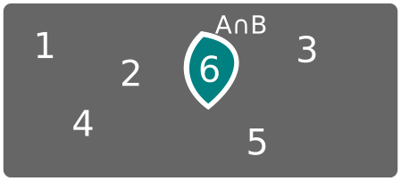

Tema 1: Probabilidade Condicionada
Experimento
Un proceso a través do cal se obtén unha observación.
Tipos de experimentos
- Determinista
- Aleatorio
1 Clasifica os seguintes experimentos como deterministas ou aleatorios:
- a Lanzar unha moeda ao aire e anotar se sae cara ou cruz.
- b Comprobar o tempo que tarda un obxecto en recorrer unha distancia coñecidas velocidade e condicións do entorno.
- c O tempo metereolóxico que fará mañá.
Suceso elemental
Cada un dos posibles resultados dun experimento.
Exemplo:
Lanzar un dado de seis caras e observar o resultado.
- \[\omega_1 =\] "sacar un 1"
- \[\omega_2 =\] "sacar un 2"
- ...
- \[\omega_6 =\] "sacar un 3"
Espazo mostral
Conxunto formado por todos os sucesos elementais.
Exemplo:
Lanzar un dado de seis caras e observar o resultado.
\[ \Omega = \{\omega_1, \omega_2, \omega_3, \dots, \omega_6\} \]
Suceso
Un subconxunto do espazo mostral
Exemplo:
Lanzar un dado de seis caras e observar o resultado.
- \[ A = \] "sacar un número par" \[= \{\omega_2, \omega_4, \omega_6\} \]
- \[ B = \] "sacar menos dun 3" \[= \{\omega_1, \omega_2 \} \]
- \[ C = \] "sacar un multiplo de 3" \[= \{\omega_3, \omega_6 \} \]
Suceso Imposible \[ \emptyset \]
Suceso Seguro \[ \Omega \]
2 No experimento de "lanzar un dado de 12 caras e observar o seu resultado" calcula:
- a Os sucesos elementales.
- b O espazo mostral.
- c O suceso \[A =\] “sacar un múltiplo de 3”.
- d O suceso \[B =\] “sacar un números par”.
- e Un suceso imposible.
Operaciones con sucesos
- Unión \[ A \cup B \]
- Intersección \[ A \cap B \]
- Complementario \[ \overline{A} \]
- Diferencia \[ A - B = A \cap \overline{B} \]
Experimento: "Tirar un dado de 6 caras e anotar o resultado".

\[A = \]"Sacar número par" e \[B = \]"Sacar múltiplo de 3"
Unión

Intersección
Diferencia
Complementario
3 Dado o experimento "lanzar un dado de 6 caras e observar o resultado" e sexan \[A\], \[B\] y \[C\] os sucesos "sacar un número par", "sacar un número menor que 3" y "sacar un múltiplo de 3", respectivamente; expresa empregando notación e calcula os sucesos elementais que forman:
- E Ocorre \[A\] e \[B\] pero non \[C\]. \[ A \cap B \cap \overline{C} = \{ \omega_2 \} \]
- a Os tres sucesos ocorren simultáneamente.
- b Ocorren \[A\] ou \[B\], pero non \[C\]
- c Ocorre algún dos tres sucesos.
- d Ningún dos tres sucesos ocorre.
Sucesos compatibles e incompatibles
Dous sucesos \[ A \] e \[ B \] son incompatibles se non poden suceder á vez e polo tanto \[A \cap B = \emptyset \]
Propiedades operacións con sucesos

Leis de De Morgan
\[\overline{A \cup B} = \bar{A} \cap \bar{B} \]
\[\overline{A \cap B} = \bar{A} \cup \bar{B} \]
Probabilidade
Medida da incertidume de que ocorra un suceso ao realizar un experimento aleatorio.
Métodos para asignar a probabilidade
Lei de Laplace
Só válido para sucesos equiprobables
\[ P(A) = \frac{\text{casos favorables}}{\text{casos posibles}} \]
4 Dunha baralla española de 40 cartas extráese unha. Calcula as seguintes probabilidades:
- a Que sexa un rei.
- b Que sexa de copas
- c Que no sexa figura (sota, cabalo ou rei).
- d Que sexa o 7 de espadas.
5Dunha urna que contén 10 bólas numeradas do 1 ao 10 extráese unha bóla. Consideremos os sucesos A = "obter número par", B = "obter un número maior que 7" e C = "obter un múltiplo de tres". Calcula as probabilidades dos sucesos:
- a \[A\], \[B\] e \[C\]
- b \[A \cap B\]
- c \[A \cup B\] e \[A \cup B \cup C\]
- d \[A - B \]
6Dado o experimento lanzar dous dados de 6 caras, calcula as probabilidades dos seguintes sucesos:
- a Sacar o mesmo número nos dous dados.
- b Que os números sumen 7.
Métodos para asignar a Probabilidade
Lei dos grandes números
A frecuencia relativa da ocorrencia dun suceso cando aumentamos moito o número de experimentos estabilizase en torno a un número que podemos tomar como la probabilidade.
Probabilidade
Definición Axiomática de Kolmogorov
\[ P : \Omega \rightarrow \mathbb{R} \]
- Para todo suceso \[A, P(A) \ge 0\]
- \[P(\Omega) = 1 \]
- Dados \[A, B\] sucesos incompatibles: \[P(A \cup B) = P(A) + P(B)\]
Consecuencias
- \[P(\emptyset) = 0 \Rightarrow 0 \le P(A) \le 1\]
- \[ P(\overline{A}) = 1 - P(A) \]
Consecuencias
- \[P(A \cup B) = P(A) + P(B) - P(A\cap B)\]
Consecuencias
\[P(A \cup B \cup C) =\]
\[ P(A) + P(B) + P(C) \]
\[- P(A\cap B) - P(A \cap C) - P(B \cap C)\]
\[ + P(A \cap B \cap C)\]
Consecuencias
\[P(A-B) = \]
\[ P(A) - P(A \cap B) \]
7Sexan A e B dous sucesos incompatibles dun experimento aleatorio tales que \[P(A)= 0,2\] e \[P(A\cup B)=0,6\]. Calcula \[P(B)\].
8Consideranse os sucesos \[A\] e \[B\] asociados a un experimento aleatorio con \[P(A)= 0,7\]; \[P(B)=0,6\] e \[P(A\cap B) = 0,4\]. Calcula \[ P(A\cup B)\], \[ P(\overline{A} \cup \overline{B})\] e \[ P(A - B)\].
9Sexan os sucesos A e B tales que \[P(A) = 3/8\], \[P(B)= 1/2\] e \[P(A \cap B) = 1/4\]. Calcula \[P(A \cup B)\], \[P(\overline{A})\], \[P(\overline{A} \cup \overline{B})\] e \[P(\overline{A} \cap \overline{B})\] e e \[ P(A - B)\].
Probabilidade Condicionada
\[ P(B / A ) \]
Probabilidade de que se cumpla B sabendo que se cumple A
10Nunha caixa hai pinzas grandes e pequenas de madera e de plástico según se reflexa na taboa.
| Pinzas Grandes | Pinzas Pequeñas | |
| Madera | 10 | 19 |
| Plástico | 18 | 23 |
Elíxese unha ao azar. Calcula a probabilidade de que:
- a Que sexa grande.
- b Que sexa grande e de plástico.
- c Que sexa grande sabendo que é de plástico.
\[G = \text{"que sexa grande"} \]
\[P = \text{"que sexa de plástico"} \]
- a Que sexa grande. \[\rightarrow P(~~~~~~~~~) \]
- b Que sexa grande e de plástico \[\rightarrow P(~~~~~~~~~) \]
- c Que sexa grande sabendo que é de plástico \[\rightarrow P(~~~~~~~~~) \]
11Que probabilidades nos dan e qué probabilidades nos piden no seguinte problema?: \[H = \text{"ser home"}\] \[M = \text{"ser muller"}\] \[A = \text{"adquirir un produto"}\]
Segundo certo estudo dun departamento de vendas, o 30% dos seus clientes son homes, o 25% dos seus clientes adquiren algún produto e o 40% dos que adquiren algún produto son mulleres. ¿Que porcentaxe dos seus clientes son mulleres e adquiren algún produto do departamento de electrónica?[...]
12Que probabilidades nos dan e qué probabilidades nos piden no seguinte problema?: \[D = \text{"estar defectuoso"}\] \[I = \text{"pasar a inspección"}\]
Cando os motores chegan ó final dunha cadea de produción, escóllense os que deben pasar unha inspección. Prodúcense un 10% de motores defectuosos, e o 60% de tódolos motores defectuosos e o 20% dos bós pasan unha inspección. ¿Probabilidade de que un motor sexa defectuoso e pase a inspección e de que un motor sexa bo e pase a inspección?[...]
Probabilidade Condicionada
\[ P(B / A ) = \frac{P(A \cap B)}{P(A)} \]
13 Nunha enquisa realizada en A Coruña determinou que o 40% dos enquisados lee o xornal A Voz de Galicia, o 15% lee o Nós Diario e o 3% lee ambos xornais. Selecionado un lector ao azar do xornal Nós Diario, calcular a probabilidade de que lea tamén La Voz de Galicia.
Regra do produto
\[ P(B / A ) = \frac{P(A \cap B)}{P(A)} \Rightarrow \]
\[ P(A \cap B) = P(A) \cdot P(B / A ) \]
\[ P(A \cap B \cap C) = P(A) \cdot P(B / A ) \cdot P(C / A \cap B) \]
14Dado o experimento, "tirar un dado tres veces" e calcular a probabilidade de sacar un número par a primeira vez, sacar 6 a segunda vez e sacar un múltiplo de 3 a terceira.
15Temos unha bolsa con 3 bólas blancas e 5 negras. Calcular a probabilidade de que ó sacar dúas bólas a primeira sea branca e a segunda negra.
Dependencia de sucesos
Dous sucesos \[A\] e \[B\] son independientes se:
\[P(A) = P(A/B)\] e \[P(B) = P(B/A)\]
\[P(A \cap B) = P(A) \cdot P(B)\]
16 (MACS - Xuño 2003) Sexan \[A\] e \[B\] dous sucesos tales que \[P(A)=0,6\] e \[P(B)=0,3\]. Se \[P(A/B)=0,1\] calcúlese \[P(A \cup B)\] e \[P( \overline{B}/ A )\].
17 (Mat - Xuño 2017) Nun experimento aleatorio, sexan A e B dous sucesos con \[P(\overline{A})=0'4\]; \[P(B)=0'7\] . Se \[A\] e \[B\] son independentes, calcula \[P(A \cup B)\] e \[P(A−B)\]
18 (MACS – Setembro 2014) Sábese que \[P(B/A)=0'7\] , \[P(A/B)=0'4\] e \[P(A)=0'2\]. Calcula \[P( A \cap B)\], \[P( B)\] e \[P(A \cup \overline{B})\]. Xustifica se son independentes ou non os sucesos \[A\] e \[B\].
21 (MACS - Xuño 2017) Segundo certo estudo dun departamento de vendas, o 30% dos seus clientes son homes, o 25% dos seus clientes adquiren algún produto e o 40% dos que adquiren algún produto son mulleres. ¿Que porcentaxe dos seus clientes son mulleres e adquiren algún produto do departamento de electrónica?
22 (MACS - Xuño 2001)Cando os motores chegan ó final dunha cadea de produción, escóllense os que deben pasar unha inspección. Prodúcense un 10% de motores defectuosos, e o 60% de tódolos motores defectuosos e o 20% dos bós pasan unha inspección. ¿Probabilidade de que un motor sexa defectuoso e pase a inspección e de que un motor sexa bo e pase a inspección?
Temos dúas furnas. A primeira con dúas bolas brancas e 5 negras e a segunda con 3 bolas brancas e 1 negra. Lanzamos unha moeda se sae cara collemos unha bola da primeira furna e se sae cruz collemos unha bola da segunda. Cal é a probabilidade de coller unha bola branca?
Conxunto completo de sucesos
Un conxunto de sucesos tal que a súa unión dá o espazo mostral e os sucesos son incompatibles dous a dous.
Por exemplo dado o experimento "lanzar un dado de 6 caras", os sucesos A="sacar par" e B="sacar impar" formarían un conxunto completo de sucesos.
Teorema de las probabilidades totais
Sexa \[A_1, A_2, \dots, A_n\] un conxunto completo de sucesos e sexa \[B\] un sucesos calquera:
\[ P(B) = \sum_{i=1}^n P(B/A_i)P(A_i)\]23 (MACS - Xuño 2017) Un artigo distribuído en tres marcas distintas A, B e C; véndese nun supermercado. Obsérvase que o 30% das vendas diarias do artigo son da marca A, o 50% son da marca B e o resto son da marca C. Sábese ademais que o 60% das vendas da marca A realízase pola mañá, o 55% das vendas da marca B pola tarde e o 40% da marca C véndese pola mañá. Calcula a porcentaxe de vendas do artigo efectuadas pola mañá.
24 (MACS - Xuño 2010) Un estudo sociolóxico afirma que 3 de cada 10 persoas dunha determinada poboación son obesas, das cales o 60% segue unha dieta. Por outra parte, o 63% da poboación non é obesa e non segue unha dieta. Que porcentaxe da poboación segue unha dieta?
25 (MACS - Xuño 2005) O cadro de persoal duns grandes almacéns está formado por 200 homes e 300 mulleres. A cuarta parte dos homes e a terceira parte das mulleres só traballan no turno da mañá. Elexido un dos empregados ó chou, cal é a probabilidade de que sexa home ou só traballe no turno da mañá?
26 (MACS - Setembro 2007)Nunha cidade, o 55% da poboación en idade laboral son homes; deles, un 12% está no paro. Entre as mulleres a porcentaxe de paro é do 23%. Se nesta cidade se elixe ao chou unha persoa en idade laboral:
- a Cal é a probabilidade de que sexa home e non estea no paro?
- b Cal é a probabilidade de que sexa muller e estea no paro?
- c Calcular a porcentaxe de paro nesa cidade
Diagramas de árbore
26 (MACS - Setembro 2007)Nunha cidade, o 55% da poboación en idade laboral son homes; deles, un 12% está no paro. Entre as mulleres a porcentaxe de paro é do 23%. Se nesta cidade se elixe ao chou unha persoa en idade laboral: